with Yuyuan Chen, Shiyi Wang, Peter Potaptchik, and Jaeyeon Kim
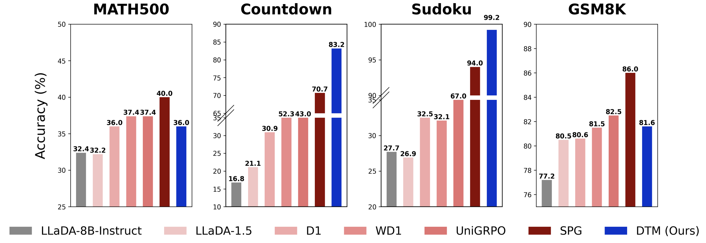
Masked diffusion large language models (dLLMs) are a promising alternative to autoregressive generation. While reinforcement learning (RL) methods have recently been adapted to dLLM fine-tuning, their objectives typically depend on sequence-level marginal likelihoods, which are intractable for masked diffusion models. To address this, we derive Discrete Tilt Matching (DTM), a likelihood-free method that recasts dLLM fine-tuning as state-level matching of local unmasking posteriors under reward tilting. DTM takes the form of a weighted cross-entropy objective with explicit minimizer, and admits control variates that improve training stability. On a synthetic maze-planning task, we analyze how DTM's annealing schedule and control variates affect training stability and prevent mode collapse. At scale, fine-tuning LLaDA-8B-Instruct with DTM yields strong gains on Sudoku and Countdown while remaining competitive on MATH500 and GSM8K.
with Peter Potaptchik, Jason Yim, Adhi Saravanan, Peter Holderrieth, and Eric Vanden-Eijnden
The sequential nature of autoregressive next-token prediction imposes a fundamental speed limit on large language models. While continuous flow models offer a path to parallel generation, they traditionally demand expensive iterative integration. Flow Maps bypass this bottleneck by compressing generative trajectories into single-step mappings, theoretically enabling the generation of full text sequences from noise in a single forward pass. However, standard formulations rely on Euclidean regression losses that are geometrically ill-suited for discrete data. In this work, we resolve this conflict with Discrete Flow Maps, a framework that reconciles trajectory compression with the geometry of the probability simplex. We recast standard flow map training for the discrete domain, aligning the training dynamics with the discrete nature of language. Empirically, this strict geometric alignment allows our method to surpass previous state-of-the-art results in discrete flow modeling.
with Peter Potaptchik, Adhi Saravanan, Abbas Mammadov, Alvaro Prat, and Yee Whye Teh
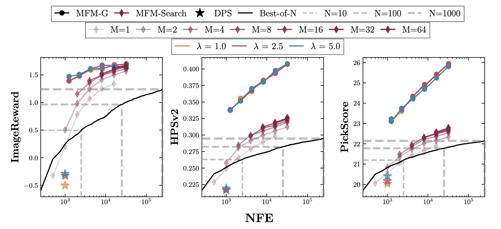
We introduce Meta Flow Maps (MFMs), extending consistency models and flow maps to enable stochastic one-step posterior sampling. MFMs provide a differentiable reparametrization that unlocks efficient value function estimation, enabling inference-time steering without inner rollouts and unbiased, off-policy fine-tuning to general rewards. Our steered-MFM sampler outperforms a Best-of-1000 baseline on ImageNet across multiple rewards at a fraction of the compute.
Tilt Matching for Scalable Sampling and Fine-Tuning
with Peter Potaptchik and Cheuk-Kit Lee
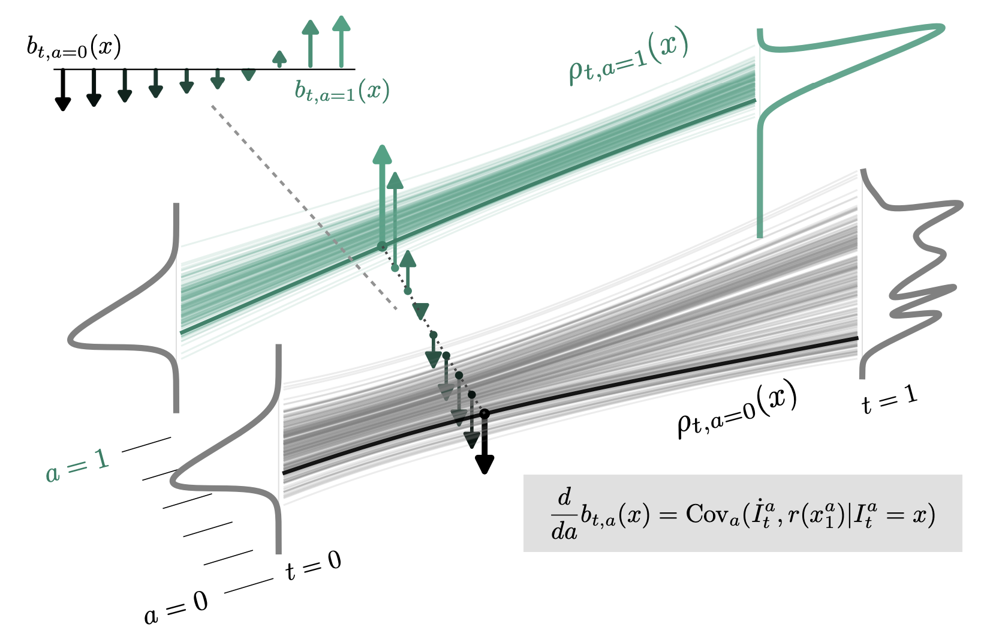
We propose a simple, scalable algorithm for using stochastic interpolants to sample from unnormalized densities and for fine-tuning generative models. The approach, Tilt Matching, arises from a dynamical equation relating the flow matching velocity to one targeting the same distribution tilted by a reward, implicitly solving a stochastic optimal control problem. The new velocity inherits the regularity of stochastic interpolant transports while also being the minimizer of an objective with strictly lower variance than flow matching itself. The update to the velocity field can be interpreted as the sum of all joint cumulants of the stochastic interpolant and copies of the reward, and to first order is their covariance. The algorithms do not require any access to gradients of the reward or backpropagating through trajectories of the flow or diffusion. We empirically verify that the approach is efficient and highly scalable, providing state-of-the-art results on sampling under Lennard-Jones potentials and is competitive on fine-tuning Stable Diffusion, without requiring reward multipliers. It can also be straightforwardly applied to tilting few-step flow map models.
with Amirmojtaba Sabour, Carles Domingo-Enrich, Nicholas M. Boffi, Sanja Fidler, Karsten Kreis, and Eric Vanden-Eijnden
A common recipe to improve diffusion models at test-time so that samples score highly against a user-specified reward is to introduce the gradient of the reward into the dynamics of the diffusion itself.
This procedure is often ill posed, as user-specified rewards are usually only well defined on the data distribution at the end of generation. While common workarounds to this problem are to use a
denoiser to estimate what a sample would have been at the end of generation, we propose a simple solution to this problem by working directly with a flow map. By exploiting a relationship between the
flow map and velocity field governing the instantaneous transport, we construct an algorithm, Flow Map Trajectory Tilting (FMTT), which provably performs better ascent on the reward than standard test-time
methods involving the gradient of the reward. The approach can be used to either perform exact sampling via importance weighting or principled search that identifies local maximizers of the reward-tilted
distribution. We demonstrate the efficacy of our approach against other look-ahead techniques, and show how the flow map enables engagement with complicated reward functions that make possible new forms of
image editing, e.g. by interfacing with vision language models.
with Jaeyeon Kim, Lee Cheuk-Kit, Carles Domingo-Enrich, Yilun Du, Sham Kakade, Timothy Ngotiaoco, and Sitan Chen
Masked diffusion models (MDMs) have recently emerged as a promising alternative to autoregressive models over discrete domains. MDMs generate sequences in an any-order,
parallel fashion, enabling fast inference and strong performance on non-causal tasks. However, a crucial limitation is that they do not support token insertions and
are thus limited to fixed-length generations. To this end, we introduce Flexible Masked Diffusion Models (FlexMDMs), a discrete diffusion paradigm that simultaneously
can model sequences of flexible length while provably retaining MDMs' flexibility of any-order inference. Grounded in an extension of the stochastic interpolant framework,
FlexMDMs generate sequences by inserting mask tokens and unmasking them. Empirically, we show that FlexMDMs match MDMs in perplexity while modeling length statistics
with much higher fidelity. On a synthetic maze planning task, they achieve H60% higher success rate than MDM baselines. Finally, we show pretrained MDMs can easily be
retrofitted into FlexMDMs: on 16 H100s, it takes only three days to fine-tune LLaDA-8B into a FlexMDM, achieving superior performance on math (GSM8K, 58%->67%) and code
infilling performance (52%->65%).
with Hugo Negrel, Florentin Coeurdoux, and Eric Vanden-Eijnden
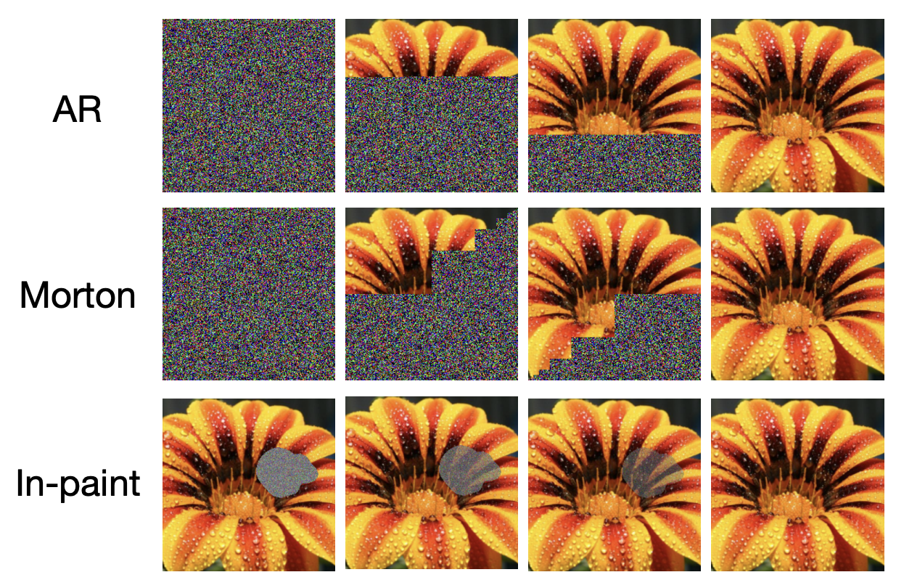
We propose a framework for learning maps between probability distributions that broadly generalizes the time dynamics of flow and diffusion models. To enable this, we generalize stochastic interpolants by replacing the scalar time variable with vectors, matrices, or linear operators, allowing us to bridge probability distributions across multiple dimensional spaces. This approach enables the construction of versatile generative models capable of fulfilling multiple tasks without task-specific training. Our operator-based interpolants not only provide a unifying theoretical perspective for existing generative models but also extend their capabilities. Through numerical experiments, we demonstrate the zero-shot efficacy of our method on conditional generation and inpainting, fine-tuning and posterior sampling, and multiscale modeling, suggesting its potential as a generic task-agnostic alternative to specialized models.
How to build a consistency model: Learning flow maps via self-distillation
with Nicholas Boffi and Eric Vanden-Eijnden
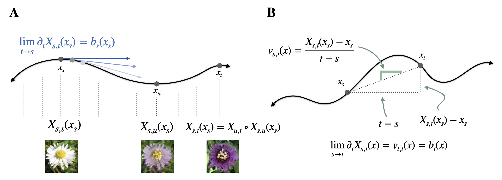
Building on the framework proposed in Boffi et al. (2024), we present a systematic approach for learning flow maps associated with flow and diffusion models. Flow map-based models, commonly known as consistency models, encompass recent efforts to improve the efficiency of generative models based on solutions to differential equations. By exploiting a relationship between the velocity field underlying a continuous-time flow and the instantaneous rate of change of the flow map, we show how to convert existing distillation schemes into direct training algorithms via self-distillation, eliminating the need for pre-trained models. We empirically evaluate several instantiations of our framework, finding that high-dimensional tasks like image synthesis benefit from objective functions that avoid temporal and spatial derivatives of the flow map, while lower-dimensional tasks can benefit from objectives incorporating higher-order derivatives to capture sharp features.
LEAPS: A discrete neural sampler via locally equivariant networks
with Peter Holderrieth and Tommi Jaakkola
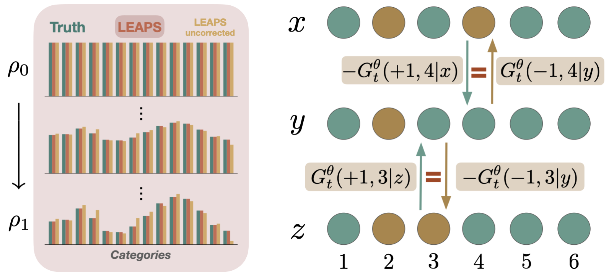
We propose LEAPS, an algorithm to sample from discrete distributions known up to normalization by learning a rate matrix of a continuous-time Markov chain (CTMC). LEAPS can be seen as a continuous-time formulation of annealed importance sampling and sequential Monte Carlo methods, extended so that the variance of the importance weights is offset by the inclusion of the CTMC. To derive these importance weights, we introduce a set of Radon-Nikodym derivatives of CTMCs over their path measures. Because the computation of these weights is intractable with standard neural network parameterizations of rate matrices, we devise a new compact representation for rate matrices via what we call locally equivariant functions. To parameterize them, we introduce a family of locally equivariant multilayer perceptrons, attention layers, and convolutional networks, and provide an approach to make deep networks that preserve the local equivariance. This property allows us to propose a scalable training algorithm for the rate matrix such that the variance of the importance weights associated to the CTMC are minimal. We demonstrate the efficacy of LEAPS on problems in statistical physics.
Debiasing Guidance for Discrete Diffusion with Sequential Monte Carlo
with Brian Lee, Paul Jeha, Jes Frellsen, Pietro Li�, and Francisco Vargas
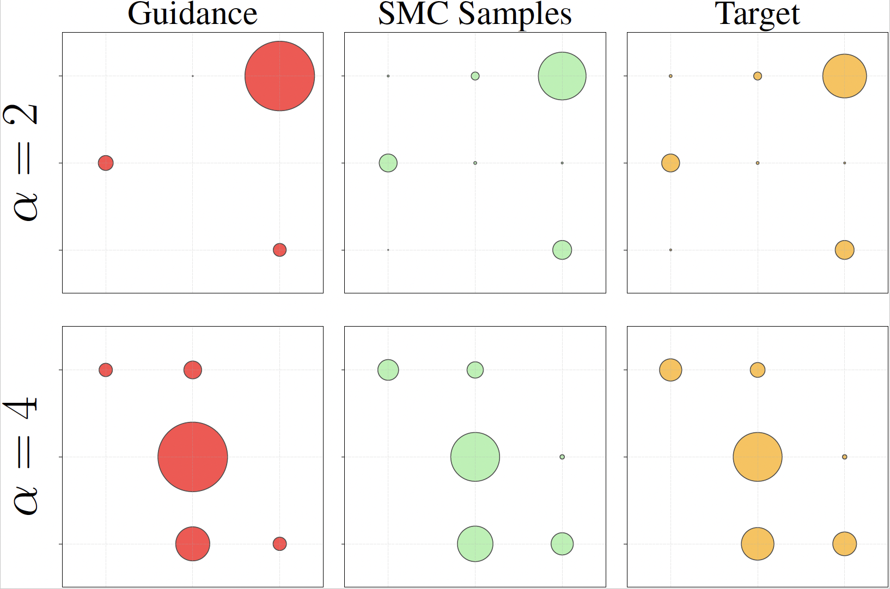
Discrete diffusion models are a class of generative models that produce samples from an approximated data distribution within a discrete state space. Often, there is a need to target specific regions of the data distribution. Current guidance methods aim to sample from a distribution with mass proportional to p0(x0)p(�|x0)^� but fail to achieve this in practice. We introduce a Sequential Monte Carlo algorithm that generates unbiasedly from this target distribution, utilising the learnt unconditional and guided process. We validate our approach on low-dimensional distributions, controlled images and text generations. For text generation, our method provides strong control while maintaining low perplexity compared to guidance-based approaches.
Strange metals and planckian transport in a gapless phase from spatially random interactions
with Aavishkar Patel and Peter Lunts
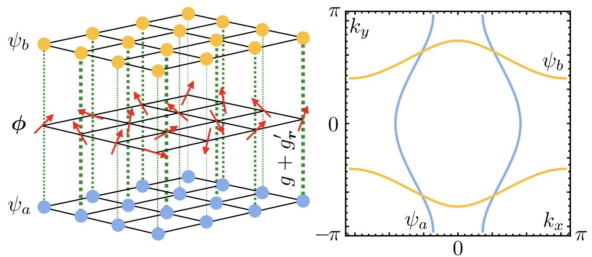
'Strange' metals that do not follow the predictions of Fermi liquid theory are prevalent in materials that feature superconductivity arising from electron interactions. In recent years, it has been hypothesized that spatial randomness in electron interactions must play a crucial role in strange metals for their hallmark linear-in-temperature (T) resistivity to survive down to low temperatures where phonon and Umklapp processes are ineffective, as is observed in experiments. However, a clear picture of how this happens has not yet been provided in a realistic model free from artificial constructions such as large-N limits and replica tricks. We study a realistic model of two-dimensional metals with spatially random antiferromagnetic interactions in a non-perturbative regime, using numerically exact high-performance large-scale hybrid Monte Carlo and exact averages over the quenched spatial randomness. Our simulations reproduce strange metals' key experimental signature of linear-in-T resistivity with a 'planckian' transport scattering rate �tr
We propose an algorithm, termed the Non-Equilibrium Transport Sampler (NETS), to sample from unnormalized probability distributions. NETS can be viewed as a variant of annealed importance sampling (AIS) based on Jarzynski's equality, in which the stochastic differential equation used to perform the non-equilibrium sampling is augmented with an additional learned drift term that lowers the impact of the unbiasing weights used in AIS. We show that this drift is the minimizer of a variety of objective functions, which can all be estimated in an unbiased fashion without backpropagating through solutions of the stochastic differential equations governing the sampling. We also prove that some these objectives control the Kullback-Leibler divergence of the estimated distribution from its target. NETS is shown to be unbiased and, in addition, has a tunable diffusion coefficient which can be adjusted post-training to maximize the effective sample size.
Generative models based on dynamical transport of measure, such as diffusion models, flow matching models, and stochastic interpolants, learn an ordinary or stochastic differential equation whose trajectories push initial conditions from a known base distribution onto the target. While training is cheap, samples are generated via simulation, which is more expensive than one-step models like GANs. To close this gap, we introduce flow map matching -- an algorithm that learns the two-time flow map of an underlying ordinary differential equation. The approach leads to an efficient few-step generative model whose step count can be chosen a-posteriori to smoothly trade off accuracy for computational expense. Leveraging the stochastic interpolant framework, we introduce losses for both direct training of flow maps and distillation from pre-trained (or otherwise known) velocity fields.
Probabilistic Forecasting with Stochastic Interpolants and F�llmer Processes
with Yifan Chen, Mark Goldstein, Mengjian Hua, Nicholas Boffi, and Eric Vanden-Eijnden
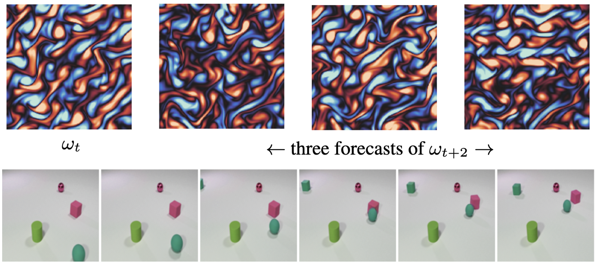
We propose a framework for probabilistic forecasting of dynamical systems based on generative modeling. Given observations of the system state over time, we formulate the forecasting problem as sampling from the conditional distribution of the future system state given its current state. To this end, we leverage the framework of stochastic interpolants, which facilitates the construction of a generative model between an arbitrary base distribution and the target. We design a fictitious, non-physical stochastic dynamics that takes as initial condition the current system state and produces as output a sample from the target conditional distribution in finite time and without bias.
SiT: Exploring Flow and Diffusion-based Generative Models with Scalable Interpolant Transformers
with Nanye (Willis) Ma, Mark Goldstein, Nicholas Boffi, Eric Vanden-Eijnden, and Saining Xie
We present Scalable Interpolant Transformers (SiT), a family of generative models built on the backbone of Diffusion Transformers (DiT). The interpolant framework, which allows for connecting two distributions in a more flexible way than standard diffusion models, makes possible a modular study of various design choices impacting generative models built on dynamical transport: using discrete vs. continuous time learning, deciding the objective for the model to learn, choosing the interpolant connecting the distributions, and deploying a deterministic or stochastic sampler. By carefully introducing the above ingredients, SiT surpasses DiT uniformly across model sizes on the conditional ImageNet 256x256 benchmark using the exact same backbone, number of parameters, and GFLOPs.
These lecture notes provide an introduction to recent advances in generative modeling methods based on the dynamical transportation of measures, by means of which samples from a simple base measure are mapped to samples from a target measure of interest. Special emphasis is put on the applications of these methods to Monte-Carlo (MC) sampling techniques, such as importance sampling and Markov Chain Monte-Carlo (MCMC) schemes. In this context, it is shown how the maps can be learned variationally using data generated by MC sampling, and how they can in turn be used to improve such sampling in a positive feedback loop.
Stochastic Interpolants with Data-Dependent Couplings
with Mark Goldstein, Nicholas M. Boffi, Rajesh Ranganath, and Eric Vanden-Eijnden
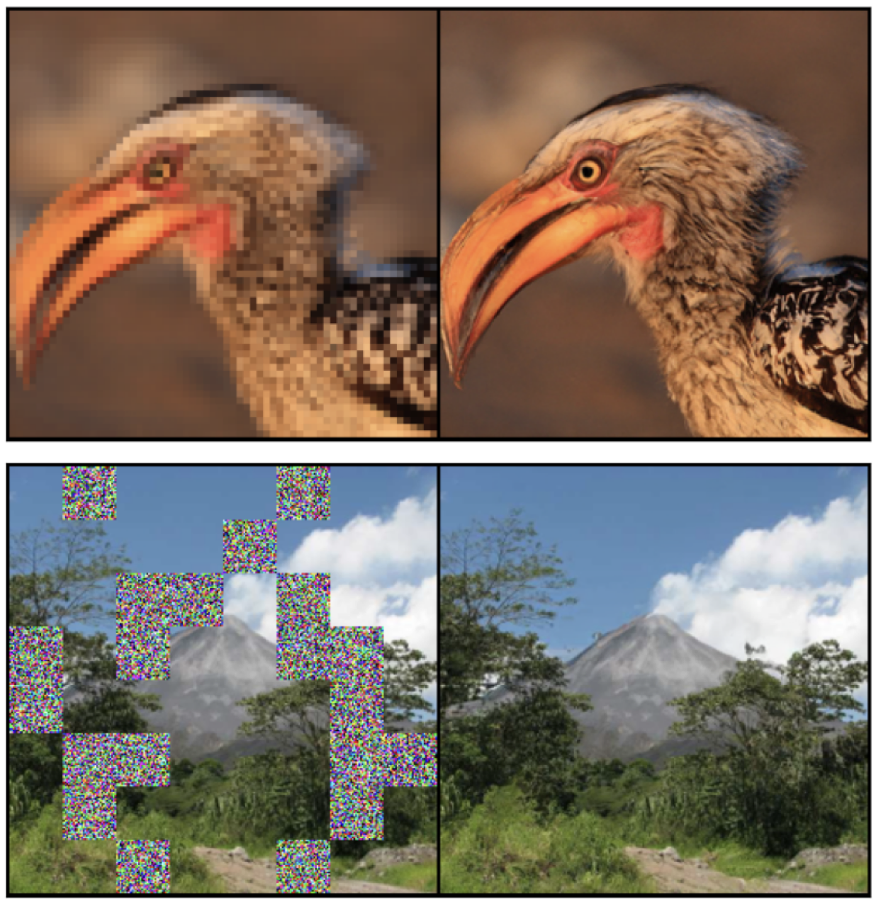
Generative models inspired by dynamical transport of measure -- such as flows and diffusions -- construct a continuous-time map between two probability densities. Conventionally, one of these is the target density, only accessible through samples, while the other is taken as a simple base density that is data-agnostic. In this work, using the framework of stochastic interpolants, we formalize how to couple the base and the target densities. This enables us to incorporate information about class labels or continuous embeddings to construct dynamical transport maps that serve as conditional generative models.
Multimarginal Generative Modeling with Stochastic Interpolants
with Nicholas M. Boffi, Michael Lindsey, and Eric Vanden-Eijnden
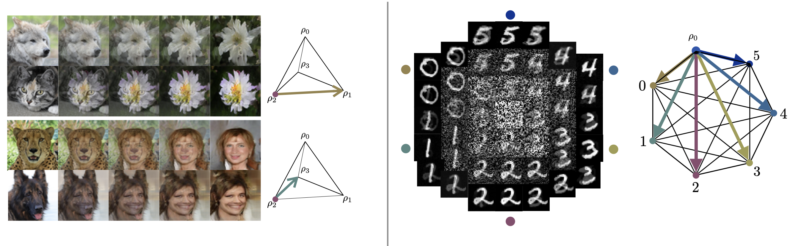
Given a set of K probability densities, we consider the multimarginal generative modeling problem of learning a joint distribution that recovers these densities as marginals. The structure of this joint distribution should identify multi-way correspondences among the prescribed marginals. We formalize an approach to this task within a generalization of the stochastic interpolant framework, leading to efficient learning algorithms built upon dynamical transport of measure. Our generative models are defined by velocity and score fields that can be characterized as the minimizers of simple quadratic objectives, and they are defined on a simplex that generalizes the time variable in the usual dynamical transport framework.
Normalizing flows for lattice gauge theory in arbitrary space-time dimension
with Ryan Abbott, Alex Botev, Denis Boyda, Kyle Cranmer, Daniel C. Hackett, Gurtej Kanwar, Alexander G.D.G Matthews, S�bastien Racani�re, Danilo J. Rezende, Fernando Romero-L�pez, Phiala E. Shanahan, and Julian M. Urban
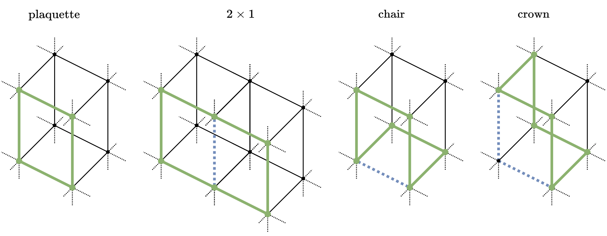
Applications of normalizing flows to the sampling of field configurations in lattice gauge theory have so far been explored almost exclusively in two space-time dimensions. We report new algorithmic developments of gauge-equivariant flow architectures facilitating the generalization to higher-dimensional lattice geometries. Specifically, we discuss masked autoregressive transformations with tractable and unbiased Jacobian determinants, a key ingredient for scalable and asymptotically exact flow-based sampling algorithms. For concreteness, results from a proof-of-principle application to SU(3) lattice gauge theory in four space-time dimensions are reported.
Stochastic Interpolants: A Unifying Framework for Flows and Diffusions
with Nicholas M. Boffi and Eric Vanden-Eijnden
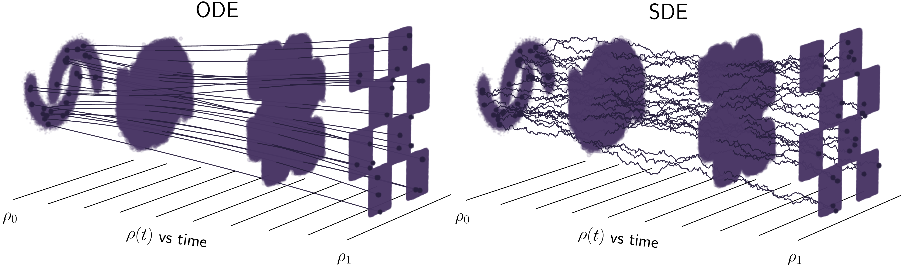
We introduce a class of generative models based on the stochastic interpolant framework proposed in Albergo & Vanden-Eijnden (2023) that unifies flow-based and diffusion-based methods. We first show how to construct a broad class of continuous-time stochastic processes whose time-dependent probability density function bridges two arbitrary densities exactly in finite time. These 'stochastic interpolants' are built by combining data from the two densities with an additional latent variable, and the specific details of the construction can be leveraged to shape the resulting time-dependent density in a flexible way.
Building Normalizing Flows with Stochastic Interpolants
with Eric Vanden-Eijnden
A generative model based on a continuous-time normalizing flow between any pair of base and target probability densities is proposed. The velocity field of this flow is inferred from the probability current of a time-dependent density that interpolates between the base and the target in finite time. Unlike conventional normalizing flow inference methods based the maximum likelihood principle, which require costly backpropagation through ODE solvers, our interpolant approach leads to a simple quadratic loss for the velocity itself which is expressed in terms of expectations that are readily amenable to empirical estimation.
Sampling QCD field configurations with gauge-equivariant flow models
with Ryan Abbott, Aleksandar Botev, Denis Boyda, Kyle Cranmer, Daniel C Hackett, Gurtej Kanwar, Alexander GDG Matthews, S�bastien Racani�re, Ali Razavi, Dailo J Rezende, Fernando Romero-L�pez, Phiala E Shanahan, and Julian M Urban
Machine learning methods based on normalizing flows have been shown to address important challenges, such as critical slowing-down and topological freezing, in the sampling of gauge field configurations in simple lattice field theories. A critical question is whether this success will translate to studies of QCD. This Proceedings presents a status update on advances in this area. In particular, it is illustrated how recently developed algorithmic components may be combined to construct flow-based sampling algorithms for QCD in four dimensions.
Non-Hertz-Millis scaling of the antiferromagnetic quantum critical metal via scalable Hybrid Monte Carlo
with Peter Lunts and Michael Lindsey
We numerically study the O(3) spin-fermion model, a minimal model of the onset of antiferromagnetic spin-density wave (SDW) order in a two-dimensional metal. We employ a Hybrid Monte Carlo (HMC) algorithm with a novel auto-tuning procedure, which learns the optimal HMC hyperparameters in an initial warmup phase. This allows us to study unprecedentedly large systems, even at criticality. At the quantum critical point, we find a critical scaling of the dynamical spin susceptibility �(�,q) that strongly violates the Hertz-Millis form, which is the first demonstrated instance of such a phenomenon in this model.
Flow-based sampling in the lattice Schwinger model at criticality
with Denis Boyda, Kyle Cranmer, Daniel C. Hackett, Gurtej Kanwar, S�bastien Racani�re, Danilo J Rezende, Fernando Romero-L�pez, Phiala E. Shanahan, and Julian M Urban
Recent results suggest that flow-based algorithms may provide efficient sampling of field distributions for lattice field theory applications, such as studies of quantum chromodynamics and the Schwinger model. In this work, we provide a numerical demonstration of robust flow-based sampling in the Schwinger model at the critical value of the fermion mass. In contrast, at the same parameters, conventional methods fail to sample all parts of configuration space, leading to severely underestimated uncertainties.
with Denis Boyda, Gurtej Kanwar, S�bastien Racani�re, Danilo Jimenez Rezende, Kyle Cranmer, Daniel C. Hackett, and Phiala E. Shanahan
We develop a flow-based sampling algorithm for SU(N) lattice gauge theories that is gauge-invariant by construction. Our key contribution is constructing a class of flows on an SU(N) variable (or on a U(N) variable by a simple alternative) that respect matrix conjugation symmetry. We apply this technique to sample distributions of single SU(N) variables and to construct flow-based samplers for SU(2) and SU(3) lattice gauge theory in two dimensions.
Flow-based sampling for fermionic lattice field theories
with Gurtej Kanwar, S�bastien Racani�re, Danilo Jimenez Rezende, Julian M. Urban, Denis Boyda, Kyle Cranmer, Daniel C. Hackett, and Phiala E. Shanahan
Algorithms based on normalizing flows are emerging as promising machine learning approaches to sampling complicated probability distributions in a way that can be made asymptotically exact. In the context of lattice field theory, proof-of-principle studies have demonstrated the effectiveness of this approach for scalar theories, gauge theories, and statistical systems. This work develops approaches that enable flow-based sampling of theories with dynamical fermions, which is necessary for the technique to be applied to lattice field theory studies of the Standard Model of particle physics and many condensed matter systems.
Equivariant flow-based sampling for lattice gauge theory
with Gurtej Kanwar, Denis Boyda, Kyle Cranmer, Daniel C. Hackett, S�bastien Racani�re, Danilo Jimenez Rezende, and Phiala E. Shanahan
We define a class of machine-learned flow-based sampling algorithms for lattice gauge theories that are gauge invariant by construction. We demonstrate the application of this framework to U(1) gauge theory in two spacetime dimensions, and find that, at small bare coupling, the approach is orders of magnitude more efficient at sampling topological quantities than more traditional sampling procedures such as hybrid Monte Carlo and heat bath.
with Danilo Jimenez Rezende, George Papamakarios, S�bastien Racani�re, Gurtej Kanwar, Phiala E. Shanahan, Kyle Cranmer
Normalizing flows are a powerful tool for building expressive distributions in high dimensions. So far, most of the literature has concentrated on learning flows on Euclidean spaces. Some problems however, such as those involving angles, are defined on spaces with more complex geometries, such as tori or spheres. In this paper, we propose and compare expressive and numerically stable flows on such spaces. Our flows are built recursively on the dimension of the space, starting from flows on circles, closed intervals or spheres.
Learnability scaling of quantum states: Restricted Boltzmann machines
with Dan Sehayek, Anna Golubeva, Bohdan Kulchytskyy, Giacomo Torlai, and Roger G. Melko
Generative modeling with machine learning has provided a new perspective on the data-driven task of reconstructing quantum states from a set of qubit measurements. As increasingly large experimental quantum devices are built in laboratories, the question of how these machine learning techniques scale with the number of qubits is becoming crucial. We empirically study the scaling of restricted Boltzmann machines (RBMs) applied to reconstruct ground-state wavefunctions of the one-dimensional transverse-field Ising model from projective measurement data.
Flow-based generative models for Markov chain Monte Carlo in lattice field theory
with G. Kanwar, and P. E. Shanahan
A Markov chain update scheme using a machine-learned flow-based generative model is proposed for Monte Carlo sampling in lattice field theories. The generative model may be optimized (trained) to produce samples from a distribution approximating the desired Boltzmann distribution determined by the lattice action of the theory being studied. Training the model systematically improves autocorrelation times in the Markov chain, even in regions of parameter space where standard Markov chain Monte Carlo algorithms exhibit critical slowing down in producing decorrelated updates. Moreover, the model may be trained without existing samples from the desired distribution.